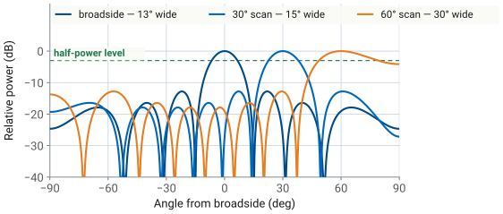
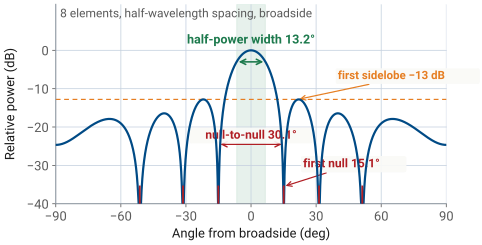

L20 - Array Factor and Beamwidth Theory#
Array Factor and Beamwidth Theory
Beamwidth is set by the aperture measured in wavelengths, \(Nd/\lambda\), and by nothing else.
Lesson 20 · Antennas, Phased Arrays, and Radar Systems · Dr. Neil Rogers
Learning Objectives
- I can compute the half-power beamwidth of a steered uniform array.
- I can compute the first-null beamwidth and locate every pattern null of a uniform array.
- I can estimate the broadside directivity of a uniform linear array.
- I can size an array — choose element count and spacing — to meet a beamwidth specification.
Where we were
The Antenna Pattern Measurement midterm project, assigned in Lesson 11, is due at the start of today’s class. Turn in your report and the measured pattern files together. The quantities you extracted from a measured cut — the half-power width, the null positions, the sidelobe level referenced to the peak — are exactly the quantities this lesson computes from theory, so keep your project data at hand.
Where we were, continued
In Lesson 19 you steered the array across the room and watched the beam widen as it went. The main lobe was about 13° across at boresight and noticeably fatter at 45°, and the pattern sat on a floor of sidelobes that moved with the beam. Lesson 16 gave you the closed form that produces all of that. Today you extract numbers from it: the half-power beamwidth of a steered array, the angle of every null, the directivity, and the design step that runs the whole thing backwards — given a beamwidth specification, how large does the array have to be.
The closed form, again
Lesson 16 summed \(N\) equal-amplitude elements with a progressive phase and collapsed the geometric series into the normalized uniform array factor
Everything about the shape of the pattern is in that one function of \(\psi\). The array’s physical parameters enter only through the map from angle to \(\psi\), and the beam peak is wherever \(\psi = 0\), which is \(\theta = \theta_0\).
Step 1 — near the peak it is a sinc
Near the peak, \(\psi\) is small, so \(\sin(\psi/2) \approx \psi/2\) and
That is the same \(\sin u / u\) you got in Lesson 6 for a uniform line source, and the reason is physical: an \(N\)-element uniform array with spacing \(d\) is a sampled aperture of length \(L = Nd\). Near the peak, where the sampling is too fine to matter, the array cannot tell you it is not a continuous aperture.
Step 2 — where the sinc is at half power
Power is half the peak where \(\lvert \sin u/u\rvert = 1/\sqrt{2}\), which happens at \(u = 1.392\). Solving outward from there:
Step 3 — back to real angles
The last step is where the scan angle earns its factor. For a beam that is narrow compared with its distance from broadside, \(\sin\theta - \sin\theta_0 \approx (\theta - \theta_0)\cos\theta_0\), so the half-width is \(0.443\lambda/(Nd\cos\theta_0)\) and the full width is twice that:
Beamwidth is set by the aperture measured in wavelengths, \(Nd/\lambda\), and by nothing else. The constant \(0.886\) is the uniform line-source constant from Lesson 6 and Lesson 15, unchanged, because a uniform array of length \(Nd\) is that line source sampled at \(N\) points. Steering off broadside foreshortens the aperture as seen from the beam direction, and the beam widens by \(1/\cos\theta_0\).
Worked example — the PHASER array
Worked example — the PHASER array
The course array has \(N = 8\) patches on \(d = 14\ \text{mm}\) centers. At the workshop frequency of \(10.3\ \text{GHz}\), \(\lambda = 29.1\ \text{mm}\), so \(d/\lambda = 0.481\) and the aperture is \(Nd = 112\ \text{mm} = 3.85\ \lambda\).
Broadside: \(\theta_\text{HP} = 0.886/3.85 = 0.230\ \text{rad} = 13.2^\circ\).
Steered to \(45^\circ\): \(13.2^\circ/\cos 45^\circ = 18.7^\circ\).
Steered to \(60^\circ\): the formula gives \(26.4^\circ\), while the pattern itself is \(30.4^\circ\) wide. The small-angle step above is the approximation that fails, and it fails on the side of optimism — a wide-scanned beam is always wider than \(0.886\lambda/(Nd\cos\theta_0)\) predicts.
The beam widens as it steers

Nulls: kill the numerator, keep the denominator
A null is a zero of the numerator that is not also a zero of the denominator. The numerator vanishes when
except when \(m\) is a multiple of \(N\), because then \(\sin(\psi/2)\) vanishes as well and the ratio returns to unity. Those are the main lobe and its repeats, the grating lobes of Lesson 26, not nulls. Converting through \(\psi = kd(\sin\theta - \sin\theta_0)\):
Nulls in angle
Read that as written: the nulls are equally spaced in \(\sin\theta\), not in \(\theta\). The pattern is a comb on the \(\sin\theta\) axis with teeth every \(\lambda/Nd\), and the arcsine that brings it back to real angles crowds the teeth together near broadside and spreads them apart toward the horizon. A null exists only if the right-hand side lands inside the visible region \(\lvert \sin\theta\rvert \le 1\); values outside it correspond to no real direction, and the null simply is not there.
The first-null beamwidth
Taking \(m = 1\) on both sides of a broadside beam gives the first-null beamwidth
Worked example — nulls of the course array
Worked example — nulls of the course array
With \(Nd/\lambda = 3.85\), the tooth spacing is \(\lambda/Nd = 0.260\) in \(\sin\theta\). Broadside, the nulls sit at
\(\sin\theta = 0.260 \rightarrow 15.1^\circ\), \(\quad 0.520 \rightarrow 31.3^\circ\), \(\quad 0.780 \rightarrow 51.2^\circ\), \(\quad 1.040 \rightarrow\) outside the visible region.
So the eight-element array shows three nulls per side, not seven, and \(\text{FNBW} = 2(15.1^\circ) = 30.1^\circ\). Steer the same array to \(30^\circ\) and the first nulls land at \(\sin\theta = 0.5 \pm 0.260\), which is \(13.9^\circ\) and \(49.4^\circ\). The beam is no longer symmetric about its own peak: the lower null sits \(16.1^\circ\) below it and the upper null \(19.4^\circ\) above, for a first-null beamwidth of \(35.5^\circ\).
How null-to-null compares to half-power
The null-to-null width runs about \(2.3\) times the half-power width for a uniform array. That ratio is worth remembering when you read a measured sweep, because the nulls are sharp features that a coarse angle grid can miss entirely, while the half-power points are easy to interpolate.
Anatomy of a uniform-array pattern

Sidelobe level does not scale with N
Note
Beamwidth and null positions both scale with \(Nd/\lambda\); the sidelobe level does not. A uniform array holds its first sidelobe at about \(-13\) dB whether it has 8 elements or 800. Lesson 24 changes that number by changing the amplitude distribution, and it costs beamwidth to do it.
Directivity of a uniform array
Directivity is the peak radiation intensity over its average, so for an array of isotropic elements it is \(N^2\) (the coherent peak) divided by the average of \(\lvert AF_N\rvert^2\) over the sphere. Doing that average term by term leaves a double sum whose cross terms are sinc functions of the element separations:
The sum collapses at half-wavelength spacing
At \(d = \lambda/2\) every cross term contains \(\sin(\pi(m-n))\), which is zero, and the double sum collapses to the \(N\) diagonal terms:
Directivity scales with aperture
Written in that last form, the result carries over to other spacings: for any uniform broadside array with \(d\) below a wavelength,
which is the uniform line-source directivity from Lesson 15 with \(L = Nd\) — the same sampled-aperture argument that produced the \(0.886\). Directivity grows linearly with aperture in wavelengths. Doubling the element count at fixed spacing doubles \(D\) and adds \(3\) dB, and it does so by halving the beamwidth, not by making any element radiate harder.
Worked example — directivity of the course array
Worked example — directivity of the course array
\(D \approx 2(8)(0.481) = 7.7\), or \(10\log_{10}(7.7) = 8.9\) dB. Turning off four elements to leave the center four gives \(D \approx 3.85 = 5.9\) dB, exactly \(3\) dB less, and doubles the beamwidth from \(13.2^\circ\) to \(27^\circ\).
Worked example — directivity of the course array (cont.)
Worked example — directivity of the course array (cont.)
The eight elements are patches, not isotropic radiators, so the array’s gain is the element gain plus the array gain. Pattern multiplication becomes addition in dB:
Eight half-wave dipoles, at \(2.15\) dBi each, would make an \(11.1\) dBi array. The sum holds while the element pattern is close to flat across the main lobe, which is where its usefulness ends: Lesson 22 takes up what happens when it is not.
Why steering barely changes directivity
Note
The array-factor directivity of a linear array barely changes as you steer, even though the beam visibly widens. The main lobe of a linear array is a cone about the array axis; steering off broadside thickens the cone wall by \(1/\cos\theta_0\) and shrinks its circumference by \(\cos\theta_0\), leaving the solid angle nearly unchanged. The scan loss you measure on real hardware comes from the element pattern, not from the array factor, which is why the PHASER loses gain toward the edges of its scan volume. That is Lesson 22’s subject.
Sizing an array: three steps
Every result so far runs backwards. A radar or communications requirement arrives as a beamwidth and a scan volume, and the array falls out of it in three steps.
Beamwidth sets the aperture. Invert the half-power formula: \(Nd = 0.886\lambda/\theta_\text{HP}\), with \(\theta_\text{HP}\) in radians. If the specification has to hold across a scan volume, divide by \(\cos\theta_0\) at the widest scan angle, because that is where the beam is fattest.
Scan volume sets the spacing. Grating lobes stay out of visible space as long as \(d < \lambda/(1 + \lvert\sin\theta_0\rvert_\text{max})\), derived in Lesson 26. At \(d = \lambda/2\) the criterion is satisfied for any scan angle, which is why half-wavelength spacing is the default.
The element count is what is left. \(N = Nd/d\), rounded up. Every element is an antenna, a phase shifter, an amplifier and a control line, so this is the number that sets the cost of the array.
Where the 0.886 formula holds, and where it doesn’t
The widget below runs the first two steps in reverse so you can see them. Set \(N\) and \(d/\lambda\) and watch the main lobe narrow as the aperture grows; the green bar is the half-power width read off the pattern and the dotted bar underneath is what \(0.886\lambda/(Nd\cos\theta_0)\) predicts. Steer toward \(\pm 60^\circ\) and two things happen at once: the beam widens, and the dotted bar falls short of the real one. Push \(d/\lambda\) toward \(1.0\) with the beam steered and a grating lobe walks in from the edge of visible space.
Worked example — a 5° pencil beam at X-band
Worked example — a 5° pencil beam at X-band
Specification: \(\theta_\text{HP} \le 5^\circ\) at \(10\ \text{GHz}\), scanning to \(\pm 45^\circ\). At \(10\ \text{GHz}\), \(\lambda = 30\ \text{mm}\).
Step |
Work |
Result |
|---|---|---|
Aperture for \(5^\circ\) broadside |
\(Nd = 0.886(30)/0.0873\) |
\(305\ \text{mm} = 10.2\ \lambda\) |
Spacing for \(\pm 45^\circ\) scan |
\(d < \lambda/(1+\sin 45^\circ) = 0.586\ \lambda\) |
take \(d = \lambda/2 = 15\ \text{mm}\) |
Element count |
\(N = 305/15 = 20.3\), round up |
\(N = 21\), aperture \(315\ \text{mm}\) |
Worked example — a 5° pencil beam at X-band (cont.)
Worked example — a 5° pencil beam at X-band (cont.)
Step |
Work |
Result |
|---|---|---|
Broadside beamwidth |
\(0.886(30)/315\) |
\(4.8^\circ\) |
Broadside directivity |
\(D \approx 2(21)(0.5) = 21\) |
\(13.2\) dB |
Worked example — a 5° pencil beam at X-band (cont. 2)
Worked example — a 5° pencil beam at X-band (cont. 2)
Now check the corner of the scan volume. At \(45^\circ\) the same array gives \(4.8^\circ/\cos 45^\circ = 6.8^\circ\), which misses the specification by nearly \(2^\circ\). Holding \(5^\circ\) at \(45^\circ\) requires \(Nd = 305/\cos 45^\circ = 431\ \text{mm}\), so \(N = 29\) elements at half-wavelength spacing, a \(43.5\ \text{cm}\) aperture and \(14.6\) dB.
The last \(45^\circ\) of scan volume is what added the eight extra channels. Whether that is the right trade depends on how much of the time the beam sits out at the edge of the volume, and it is a question worth asking before the aperture is fixed.
What Lesson 21 should measure
Lesson 21 sweeps the PHASER with all eight elements on, then with the center four, then with the center pair, and measures the beamwidth each time. Predict first, measure second, reconcile third. Every number below comes from this lesson.
Configuration |
Aperture \(Nd\) |
HPBW |
FNBW |
First sidelobe |
|---|---|---|---|---|
8 elements |
\(112\ \text{mm} = 3.85\ \lambda\) |
\(13.2^\circ\) |
\(30.1^\circ\) |
\(-13\) dB |
Center 4 |
\(56\ \text{mm} = 1.92\ \lambda\) |
\(27^\circ\) |
\(62^\circ\) |
\(-11\) dB |
Center 2 |
\(28\ \text{mm} = 0.96\ \lambda\) |
\(62^\circ\) |
\(180^\circ\) by convention |
none |
Three details in that table are worth stating before the lab rather than after.
The two-element row has no null
The two-element row has no null and no sidelobe. With \(Nd\) under a wavelength, \(\lambda/Nd\) exceeds \(1\) and the first null falls outside the visible region, so the pattern is a single broad hump and the first-null beamwidth is quoted as \(180^\circ\) by convention. Its half-power width is \(62^\circ\), not the \(53^\circ\) the small-angle formula returns, because a beam that wide breaks the approximation used to derive it.
The first sidelobe drifts with element count
The first sidelobe drifts with element count. The \(-13\) dB figure is the large-array limit; eight elements give \(-12.8\) dB and four give about \(-11\) dB. All three are far above the sweep’s noise floor, which sits roughly \(23\) dB below the uniform-taper peak.
The sweep is a discrete grid
The sweep is a discrete grid. The GUI steps the commanded angle by the phase-shifter resolution, \(2.8125^\circ\) by default, so measured widths land one to three degrees off the calculated ones — measured HPBW near \(13.1^\circ\) and FNBW anywhere from \(28^\circ\) to \(30^\circ\) for the full array. That is the grid, not the physics, and it is not an error to explain away.
Summary — beamwidth
Symbol / idea |
What it is |
Number to remember |
|---|---|---|
\(\psi = kd(\sin\theta - \sin\theta_0)\) |
array-factor argument |
beam peak is at \(\psi = 0\) |
\(N\psi/2 = 1.392\) |
half-power point of \(\sin u/u\) |
the source of the \(0.886\) |
\(\theta_\text{HP} \approx 0.886\lambda/(Nd\cos\theta_0)\) |
beamwidth from aperture and scan |
\(13.2^\circ\) for the course array |
Summary — nulls and directivity
Symbol / idea |
What it is |
Number to remember |
|---|---|---|
\(\sin\theta = \sin\theta_0 \pm m\lambda/Nd\) |
null locations |
equally spaced in \(\sin\theta\), not \(\theta\) |
\(\text{FNBW} = 2\arcsin(\lambda/Nd)\) |
null-to-null width, broadside |
\(30.1^\circ\) at \(N=8\); about \(2.3\ \theta_\text{HP}\) |
\(D \approx 2Nd/\lambda\) |
broadside directivity, uniform array |
\(7.7 = 8.9\) dB at \(N=8\) |
Summary — gain and array sizing
Symbol / idea |
What it is |
Number to remember |
|---|---|---|
\(G_\text{total} = G_\text{element} + D_\text{array}\) |
pattern multiplication in dB |
add the decibels |
\(d < \lambda/(1+\lvert\sin\theta_0\rvert)\) |
spacing for a scan volume |
\(\lambda/2\) scans anywhere |
first sidelobe \(\approx -13\) dB |
set by the taper, not the size |
unmoved by \(N\) or by steering |
Practice
Where this is going
Lesson 21 puts the table in Part 5 in front of the hardware. You will load the Array Factor preset, sweep the full array, then drop to four elements and two, and compare measured beamwidths against the numbers you calculated today. Bring the calculated column filled in; a measurement you cannot predict within a couple of degrees is a measurement you cannot use to find a fault later. Read the Part 5 table and the Lesson 21 procedure before class.
What the array factor leaves out
After the lab, Lesson 22 addresses what the array factor leaves out. Every result in this lesson treats the elements as isotropic points, which is why the directivity came out independent of scan angle and why the pattern in the widget is the same at \(60^\circ\) as at boresight. Real patches have their own pattern, it rolls off toward the edges of the scan volume, and the full array pattern is the product of the two. That product is where the array’s measured gain, its usable scan range, and its cross-polarization all come from.